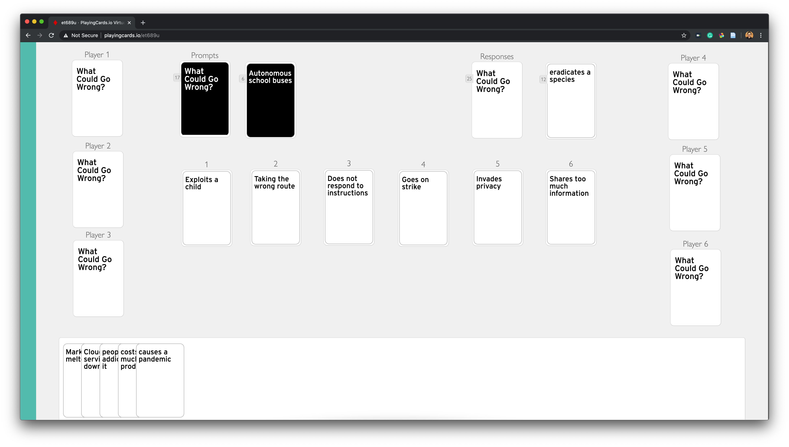

While autonomous vehicles have the potential to greatly improve our daily lives, there are also challenges and potential downsides to these systems. In this workshop, we intend to foster discussions about the potential negative aspects of autonomous cars inhopes of surfacing challenges that should be considered during the design process rather than after deployment. We will spur theseconversations through a review of participant position statements and through group discussion facilitated by a card game called "What Could Go Wrong?" Our goal is to consider the autonomous vehicle’s benefits—improving safety, increasing mobility, reducingemissions—against potential drawbacks. By identifying potential harms and downsides, the workshop attendees, and the AutoUIcommunity more broadly can design well-considered solutions.
What do you think are possible downsides of autonomous vehicles? Is there a specific downside that you think is not as commonly discussed? We invite you to submit a 2-4 page (1000 - 2000 words) position statement on a potential downside that autonomous vehicles may have. Selected position statements will be featured on this website and will be shared with workshop attendees before the event. Our goal is to have these position statements seed discussion during the What Could Go Wrong? gameplay.
\documentclass[manuscript]{acmart})\documentclass[manuscript]{acmart})| Start Time - 07:00 UTC | |
|---|---|
| Welcome & Introductions | 15 min |
| Brief Review of Position Statements | 15 min |
| What Could Go Wrong? Online Card Game | 60 min |
| Group Discussion | 20 min |
| Closing & Next Steps | 10 min |
We will play a card game that Nik and Wendy are developing to help spur disucssion. The game is similar to Cards Against Humanity. To facilitate online play, we are using PlayingCards.io
